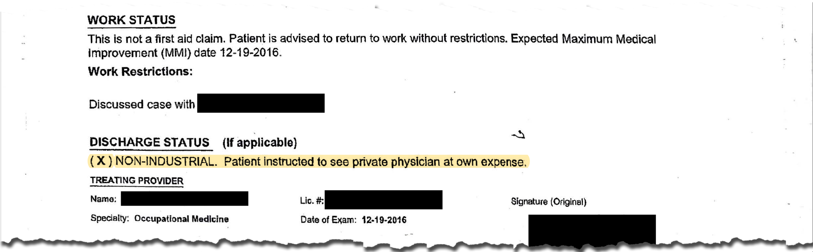

California has some of the nation’s most progressive recycling policies and goals, but the industry’s workers face hazardous conditions—and global market forces are adding to their strain.
It was a pleasant summer day, so working under a wall-less roof didn’t bother her. The conveyor belt moved dizzyingly fast, but she was used to that. She and her husband Sergio Gonzalez, both recyclers at Waste Management of Alameda County, picked through the ever-changing mess, their hands quick and assured. Each time they saw an item of value—a beer bottle, an orange juice carton—they’d pick it up and throw it into one of several bins, to be compressed into bales and sold overseas.
Then a large piece of wood rolled by, jamming the belt. As Victoria leaned over and tried to pry the wood free, she felt a burning pain in her lower back. It radiated down both of her legs, which felt numb and heavy.
Suddenly Victoria realized: this pain felt familiar. Back in 2014, when she was 34, she’d injured her back at work while pushing a heavy wheelbarrow full of dirt and glass. She'd gone to the doctor then, and after several appointments, he’d declared her fit for work. Now the pain was back.
Victoria Leon at her home. Photo by Yutao Chen.
Victoria’s occupation, recycling, is no stranger to injury. Since 2010, workers in California facilities that process recyclables have been crushed by equipment, poisoned by noxious gases, contracted hernias and brain injuries, been electrocuted, burned and poisoned, according to the state’s Department of Industrial Relations. They have sustained hundreds of eye injuries, thousands of back problems, and more than a few amputated fingers, toes and limbs. Many have been stuck by contaminated needles or cut on broken glass. Still others suffer from dust inhalation or chronic back problems. Some are permanently disabled; some have died.
Californians pride themselves on their recycling policies. The state has some of the most progressive in the nation, with 7 out of 10 of the state’s largest cities having implemented or working on “zero waste” policies as of 2019. It also has some of the most progressive worker safety standards. But across the state, companies that employ the state’s approximately 13,000 recycling workers harbor hazards that academic experts and worker safety advocates say are both unacceptable and preventable. The problem: California lacks the resources necessary to actually enforce its strong regulations.
“I think most injuries [in recycling] are easily preventable,” said Debbie Berkowitz, director of the National Employment Law Project, or NELP. Berkowitz’ grandfather was killed in a scrap metal recycling center, and when she was working at the federal Occupational Safety and Health Agency (OSHA), recycling was “one of the more dangerous industries,” meaning it came up regularly as a source of concern.
“Unfortunately, a lot of companies…in this industry, seem to put safety last on the list of things they think about…It’s all about valuing workers over the speed of production,” Berkowitz said.
It’s fairly well-known that the waste industry is dirty, difficult and dangerous—a recent ProPublica investigation revealed the hazards garbage truck drivers face in New York City. But unlike the people who pick up our trash, the people who recycle it, like Victoria, are usually hidden from view. They labor in out-of-the-way buildings behind closed doors, or at small centers open to summer heat and rain. They tend to speak little English, and many are undocumented. They earn less than truck drivers, and their jobs require more direct interaction with hazardous materials. Workers at scrap metal plants or construction demolition sites must handle blocks of concrete or sharp sheets of metal; some must use dangerous machinery they aren’t even trained to operate. And workers that sort recycling at materials recovery facilities (MRFs), the facilities that process recyclables picked up at curbs, bend over conveyor belts for up to eight hours a day. They must plunge their hands into piles of soggy material that may hide dead cats, used syringes or toxic chemicals. Multiple sources interviewed for this story said they have encountered grenades.
“You can't run an operation like this and not have people get injured,” said Richard Valle, president of Tri-CED community recycling in Union City. But you can minimize: according to Valle, his facility has only had one serious injury in forty years of operation. He attributes this to a “philosophy of incorporating safety into our operations,” including weekly safety meetings and unlimited protective equipment.
California’s workers have two systems for filing complaints. For injuries, they file a workers compensation claim, a form that helps them get covered for medical care related to their injury. For dangerous conditions, they can call California’s Occupational Safety and Health Agency, or Cal/OSHA. But both systems are compromised, according to experts familiar with each.
In Cal/OSHA’s case, its resources are stretched thin, making it difficult for the agency to hold businesses accountable. From 2014 through 2018, government inspectors only visited 1 in 5 recycling sorting facilities, and a fraction of other recycling centers throughout the state. When inspectors do pay waste and recycling companies a visit, they often find dangerous conditions: during that same period, 412 inspections of facilities with recycling operations yielded over 300 life-threatening safety violations. Inspectors found three life-threatening violations for every four inspections, and over three violations per inspection on average. This number is far higher than the state’s average findings of 0.7 violations per inspection.
From 2014 through 2018, only 21% of materials recovery facilities were inspected by Cal/OSHA. Click to zoom and see which facilities were inspected. Data courtesy of CalRecycle and Cal/OSHA
Of course, Cal/OSHA can’t visit every facility in the state, nor should it be expected to. “Cal/OSHA is a complaint and accident-driven system, and that’s a good thing,” said Garrett Brown, a former Cal/OSHA inspector and official with 20 years of experience. But because of its current staffing levels, Cal/OSHA can barely keep up with the complaints and accident reports it receives, he said, let alone conduct routine inspections of higher-risk industries like recycling. It also has very little time to inspect for less immediate, more long-term hazards, like high dust levels, chemicals, ergonomic issues and bloodborne pathogens—hazards recycling workers face regularly.
As of February 2019, according to documents released to Brown through a public records request, Cal/OSHA had an inspector to worker ratio of 1 inspector to 88,656 workers—worse than Washington state's 1 to 25,000, Oregon's 1 to 22,000, and the federal ratio of 1 to 66,000. Based on its current inspector to worker ratio compared with Berkowitz’ federal analysis, it would take Cal/OSHA more than 150 years to visit every workplace in California at least once. Waste facilities in California are also inspected by what are known as Local Enforcement Agencies (LEAs), but these agencies aren’t directly responsible for ensuring worker safety, according to multiple LEA spokespeople.
California’s workers compensation system, in turn, can be punishingly slow: workers who file injury claims regularly wait six months or more to be treated, according to Ian Cooper, an Oakland-based lawyer with more than 20 years of experience in workers compensation law. Furthermore, he said, companies have near-total oversight over which doctors they send their workers to.
“Doctors that are...a little more of an advocate for [the patient] may feel pressured from an insurance carrier, and they may be removed from the network if their insurance carrier feels they’re not in line with their model of either profit or treatment,” Cooper said.
This model of doctor selection—which Cooper called a potential conflict of interest—could have factored into what happened to Victoria Leon.
The Company Doctor
After Victoria suffered her second injury, her supervisor sent her to a doctor at Concentra, a company doctor, who gave her some Advil, prescribed three physical therapy sessions and cleared her to go back to work, according to her medical files. “They said I was 100%,” Victoria said. “But I didn’t feel 100%.” Working on the line hurt, and she was unable to keep up with the speed: recycling workers at Waste Management are expected to sort 50 items a minute, every minute, for at least seven hours a day, she and her husband said.
Victoria kept asking her supervisor to see the doctor again. Months went by. Finally her supervisor granted her wish—but this time, she was sent to U.S. HealthWorks, a company doctor and urgent care clinic in San Leandro.
Victoria Leon at her home. Photo by Yutao Chen.
Click here to listen to Victoria's account
“As soon as [the doctor] walked in, she was like, ‘oh, I know why you have the pain on your back,’” Victoria recalled. “‘It’s because your head weighs more than 30 pounds, you don’t know how to stand up, you don’t know how to sit down.’ I was in shock, I was like, wait a minute. She hasn’t put a hand on me, how does she know what’s wrong with me?” The doctor later insinuated that Victoria was “faking it,” she said.
In Victoria's medical report from this visit, her doctor notes that her back is essentially fine, with some minor inflammation. Furthermore, the report notes, this injury is “non-industrial”—in other words, she wasn’t injured on the job. “Patient Instructed [sic] to see private physician at own expense,” the report reads.

After her U.S. HealthWorks visit, Victoria returned to work, but she still couldn't perform her duties. She asked to be reassigned to a different part of the line, but it still hurt. She wasn't 100%—she didn't even feel 50. So she paid out of pocket to see her private doctor, who worked through the Kaiser Permanente network. She asked for an MRI repeatedly, and the doctor finally complied.
Victoria’s doctor then found what the U.S. HealthWorks doctor had not: that Victoria’s spine curved abnormally, and was arthritic. Several of her discs were torn.
Some of these symptoms are common in people in their 50s or older. At the time of diagnosis, Victoria was 36.
This doctor recommended modified activity for Victoria and helped her complete a claim for workers compensation so she could treat her injuries. The insurance company denied Victoria’s claim.
“If you don't feel like you can do this job, then leave,” she remembers her supervisor saying. “Come back when you're ready to work.”
But Victoria didn’t want to leave her job. She loved it. Even though it was dirty, messy, and dangerous; even though she found dead animals and grenades on the conveyor belt sometimes, and came home smelling like garbage, and felt dizzy and tired after every day.
Victoria had grown up hard. As a kid in San Francisco, she’d been surrounded by gangs. She dropped out of high school, became a single mother at age 19 and worked low-paying jobs in the restaurant industry until she was about 25.
Waste Management had offered her a $2-an-hour raise from her previous job, plus other things. A community of friends. A mission: “I was helping the planet,” she said. “I was doing something for my kids.”
Even a husband.
"I like to say I found a diamond in the garbage," she said, looking fondly over the table at Sergio, the father of her third child and her husband. The couple met while sorting materials side by side on the conveyor belt.
Listen to Victoria describe her husband.
Victoria met her husband, Sergio Gonzalez, at Waste Management. The couple parents three children. Photo by Yutao Chen
So Victoria contacted a lawyer, who took her to Dr. Mechel Henry, an Oakland-based spine specialist. Dr. Henry is also a certified Qualified Medical Evaluator (QME), meaning she is approved by the California Division of Workers Compensation to evaluate injured workers.
Dr. Henry’s medical report expanded on the injuries Victoria’s own doctor had found. It came to the opposite conclusion as the HealthWorks doctor:
“The injury has caused permanent partial disability,” the report reads. “No medical records show outside nonindustrial apportionment is indicated. 100% is industrial.”
In other words: the private doctor was certain that Victoria's back injuries had occurred on the job, and that she could no longer perform her regular duties. She had also lost 40% of her upper-body strength.
Nearly three years after her injury, Victoria’s back still hurts. She has yet to receive several medical procedures recommended by Dr. Henry, and remains unsure of what Waste Management legally owes her.
Waste Management has not responded to repeated requests for an interview. Neither has Victoria’s lawyer.
Ian Cooper is an Oakland attorney who has specialized in workers compensation since 1994. He’s represented recycling workers with back problems and severe brain injuries, among other ailments. He said that workers often come to him after waiting six months or longer for medical treatment, partially because of a lack of doctors certified by the state to assess worker injuries.
“This is not about bad employers and good employees,” he said. “This is much more complicated than that. Many fantastic employers want their employees to be healthy so they can come back and work.”
But companies’ insurance providers, Cooper said, often place “a big emphasis on cost control at the expense of the injured worker. What’s lost is the benefit delivery part.”
Additionally, insurance companies have total control over which doctors they employ, according to the Department of Industrial Relations. For Cooper, this raises concerns that insurance companies might hire doctors they perceive to be too "worker-friendly."
Workers with language barriers often have even more difficulty obtaining workers compensation funds, he said, particularly if they are undocumented. “[I’ve had cases where] an undocumented person files a claim and soon after, the employer says, ‘we need this information, [and] if we don’t get it we have to let you go,’” he said. “That raises questions about retaliation.”
According to a dataset released by California’s Department of Industrial Relations in response to a public records request, recycling workers filed nearly 17,000 injury claims between 2010 and 2019. 25% of these claims contain no record of payment to a worker. John Gordon at the Department of Industrial Relations, who supplied the dataset, said that it is based on companies’ self-reporting and that there is no way to know whether the blank fields mean workers’ claims were denied or companies simply didn’t report the amount. “We don’t do a lot of processing or validation of what’s coming in,” he said. “It’s up to the [requester of the data] to look through it.”
What’s more, even if the database contained an accurate report of every formal injury complaint, it would still likely undercount injuries. Many workers do not file complaints when they get hurt, according to Kevin Riley, a researcher at the UCLA Labor Occupational School of Health (LOSH). In a 2015 study, he examined workers in the low wage labor market in three major cities: Los Angeles, Chicago and New York. Riley’s primary findings were that vulnerable workers— undocumented, limited-English speaking and/or low wage, like many recycling workers—were less likely to report injuries, and when they did, they were often met with hostility from their employers. Ten percent of workers didn’t report their injuries at all. And when they did, almost half of their employers made them work anyway; 13% were fired.
According to Rob Nothoff, director of LAANE, an advocacy group pushing for improved conditions for recyclers in Los Angeles, employer retaliation is “common” for recycling workers in California. Several years ago, Nothoff interviewed waste workers throughout L.A. He learned that when workers at some facilities voiced safety concerns, they risked getting fired. Or their supervisors placed them in the worst spot on the recycling line—the spot where the material flow was the heaviest, with wet and smelly garbage to sort through. These factors were especially true for workers who didn’t speak English or were undocumented—like Delfina Casillas.
A Better Tomorrow
Delfina, who is 59, came to the U.S. 23 years ago. After 11 years of odd jobs and janitorial work, in 2012 she took a job at the waste company Alameda County Industries (ACI) through Select Staffing, an agency that has been known to recruit undocumented workers. Back then, ACI’s recycling facility was not unionized: Select Staffing employees earned only $8 an hour, and received no benefits or healthcare. They also, according to Delfina, got no training whatsoever. Watch the video below to hear Delfina's account of her first few days as a recycling worker.
Gradually, Delfina learned the ropes. As the conveyor belt whizzed along, she was responsible for grabbing several categories of material at any given time—cardboard, paper goods, plastics, metals or cloth—and placing them in nearby bins or chutes. She inhaled so much dust she grew worried for her health. She had to grab broken glass and used needles with her bare hands, because the staffing agency didn't provide her enough safety gloves. If she started bleeding, she had to keep working. If she complained, the agency would threaten to fire her.
"At [Select Staffing], they used to tell us, 'if you don’t like [working here], well, there’s the door,'" she said in Spanish.
ACI declined to grant an interview, saying it was undergoing reconstruction efforts and an interview would be too time-consuming.
Overall, Delfina said, she has gotten used to her situation. She has gotten used to the way the smell—a cross of all that goes into the trash, from rotting milk to feces to throw-up—seeps into her car’s steering wheel, accompanying her on her drive home. She has gotten used to the pain in her back as she goes to sleep, the early morning hours, the constant risk of reaching into the fast-moving pile of materials and getting stuck with a needle. She washes her clothes a lot, and she tries to stay positive. The work pays better than most of her previous jobs, and it’s steady. She sleeps in an apartment now, and not on the streets.
“I wanted to have a better tomorrow, even if I have to be working in the trash,” she said. “Us, people without papers, come to work in whatever there is.”
ACI unionized in 2014 and no longer contracts with Select Staffing. The union now provides some safety training, which has helped. Delfina makes close to $20 an hour and receives one new set of gloves per week and two aprons a year, though she said everybody wears their equipment out faster than that. “So we have to find our own.”
Delfina Casillas, 59, must make her own arm coverings out of cable-knit sweaters and replacement aprons. Photo by Yutao Chen
Unions can provide much-needed oversight to companies, according to worker safety researchers, union representatives and the workers themselves. A review of OSHA data found that, of all facilities inspected, 94% of “serious,” or life-threatening, violations came from non-unionized facilities while only 6% came from unionized ones. Though nobody keeps statistics on how many recycling workers specifically are unionized, approximately 15 percent of all workers in California are covered by a union contract, according to the Bureau of Labor Statistics.
In Alameda County, five of the six recycling sorting facilities are unionized, according to Jose Nuñez, an organizer at the International Longshore and Warehouse Union (ILWU). But in other counties, unions have yet to penetrate MRFs and other recycling centers the way they have in Alameda. For instance, in Los Angeles, many recycling companies, including a large company called Athens Services, are not unionized. These still exhibit relatively poor conditions and sometimes deny workers the safety equipment they need, according to interviews with worker safety advocates and union organizers.
And even in Alameda County, most recycling centers that aren’t classified as MRFs (places that deal with scrap metal, do secondary processing of plastic and glass bottles, and more) are not unionized.
Moving on
After Victoria was fired, it took her a long time to find a new job. “I applied everywhere,” she said. She sent out application after application. Each was rejected.
Then she got a call from the company she thought least likely to hire her: Tesla. Victoria was glad to get an interview, but she was also nervous. Her medical records listed her as permanently partially disabled, and unfit for certain kinds of manual labor. But she wasn’t as worried about how her injury would worsen at Tesla; at that point, she couldn’t afford to be. What worried her, in particular, was how her injury status would affect her chances of getting, and keeping, a job.
Oh well, she thought. Better be open about it now than be fired later. So when she walked into her interview, “the first thing I said was, ‘I’m injured,’” Victoria recalled. To her surprise, the company hired her anyway.
Victoria has worked at Tesla for the last several months. Unlike Waste Management, the factory isn’t unionized. Yet it feels safer than her old job at Waste Management. The objects she lifts are lighter. Her managers listen more carefully.
“I’m not gonna lie, by the end of the day I’m working 12 hours per day at Tesla,” she said. “I’m not gonna lie, when my shift ends, I’m tired, and it hurts. But I get to finish my 12 hours, and if I’m not so comfortable I tell the manager and he will move me around. So I’m happy there.”
***
Liliana Michelena, Yutao Chen and Francesca Fenzi contributed to this story.
The China Effect
China’s National Policy has affected more than just local recycling businesses - it may be harming workers, too.
Over the last five years, conditions for recycling workers in Alameda and Los Angeles counties have markedly improved - and they have unions to thank for that. Overall, however, California’s recycling industry may be getting less safe, thanks to new restrictions imposed on imported recyclables by China last year. This policy, known as “National Sword,” has made recycling work both more demanding and more dangerous, according to business owners and union leaders.
Over the last two years, working in recycling has gotten more dangerous nationally. In addition to Cal/OSHA’s cuts, in 2017, national injury rates of recycling workers at materials recovery facilities rose from 6 per 100 workers in 2016 to 9.8 per 100 workers in 2017, an increase that some believe may be due to economic policies in China, but remains unexplained.
Why China? For years, Chinese importers were willing to accept contaminated recycling materials that came from recycling centers. Then in 2017, China announced it was imposing two new measures—a blanket ban on most kinds of plastic waste and mixed paper, and a refusal to accept recycling bales that comprised more than 0.5% trash or “low-grade” materials like greasy packaging. These policies, implemented in 2018, formed “National Sword,” an anti-pollution strategy that’s led to what’s been referred as “the death of recycling as we know it” by industry experts in the U.S.
“Candidly, I don’t know whether one caused the other,” said David Biderman, CEO of the trade association The Solid Waste Association of North America (SWANA), referring to increased worker injury rates and National Sword. But, he said, the Chinese restrictions caused a number of potential hazards for workers. Right before restrictions took effect, recyclables’ profitability skyrocketed: employers thus pushed their workers to produce more material, making their work faster and more demanding. Others hired more workers, and the addition of many new workers, including less well-trained temps, could have increased injury rates. In late 2017, as commodity prices dropped, companies began storing bales of recyclables, leading to overcrowded storage. “When you get hit by a 1,500 pound bale, it could be fatal,” he said.
Richard Valle, the CEO of Tri-CED Community Recycling, said that China’s economic policies have certainly made things more dangerous for his workers.
“We never did this before, but we have to dress bales now,” he said, meaning: clean the massive, 1,500 pound compressed cubes of recycled materials that his company still ships overseas. “You have to literally pull by hand, and visually inspect those bales and pull that material from a very tight compressed bale of material. And so now you have shoulder injuries. You have elbow injuries. You have injuries to an eye because if somebody pulls too hard they hit themselves in the head.”
Jose Nuñez, the union representative for most recycling workers in Alameda County, said that in response to China’s changing policies, workers were being asked to do more work in less time. “They’re passing the buck onto the worker,” he said. This trend, he said, could potentially increase injury rates. Other recycling facilities have had to lay workers off or shut down.
But National Sword may not spell bad news for recycling workers or the industry, at least in the long term.
“Most of the responses to [National Sword] are quite negative and angry, [but] I think it’s the best thing that could have happened to U.S. recycling,” said Neil Seldman, an expert in waste industry economics and director of the Institute for Local Self-Reliance, a nonprofit advocating local business development.
For one thing, it’s making us realize how contaminated our recycled materials are. According to Seldman, for the last two decades, municipal recycling has been dominated by a few large companies, who have advocated for a model of recycling called “single stream”—in the single stream model, all recyclables go into a single container and sorted on one conveyor belt, rather than people having to separate paper, metal, plastics and glass. This cut down on costs for waste companies at first, and recycling participation rates went up because it was easier for ordinary people to throw all their paper, plastic and glass into one container. But single-stream also has distinct disadvantages. Chief among them, recyclables become more contaminated when they’re all dumped into one container. When China accepted contaminated recyclables, this was fine—but now, companies are thinking that separating materials might be a way to end up with cleaner end products.
Contamination also makes recycling work more dangerous, according to Brent Bell, president of Waste Management’s Recycle America division. In an interview with the online publication Waste Dive, he said that the presence of non-recyclable materials like garden hoses and propane tanks at recycling facilities have the potential to jam equipment, cause explosions and otherwise hurt workers.
“[China] has to be a wake-up call for the industry to say, ‘We've got to do something today about contamination, because this industry is suffering because of it,’” Bell told Waste Dive.
California lawmakers are starting to think along this line too. Earlier this year, California Assembly Member Cecilia Aguiar-Curry introduced Assembly Bill 815, which provides municipalities with incentives to switch to dual-stream recycling processes.
In an ideal world, Seldman said, National Sword would encourage the growth of recycling processing centers here in the U.S. Such a move, he said, could create hundreds of thousands of jobs across the U.S.
“That’s the stimulation that Chinese have done for us that’s going to break the cycle,” Seldman said.
Working in the recycling industry can be dangerous—and in some cases, fatal. Here are just a few of the deaths that have occurred in California recycling facilities since 2010.
2011:
In 2011, at the Lamont-based Community Recycling & Resource Recovery, 16-year-old Armando Ramirez was cleaning an underground drain system when he was overcome by hydrogen sulfide fumes; his brother, Eladio, came in after him, and was also overcome. Both brothers died. The company was cited for twelve life-threatening violations and fined more than $166,000, according to OSHA records and a press release by the Department of Industrial Relations. Following these deaths, the recycling facility attracted public outcry before the San Francisco-based waste and recycling company Recology bought it in 2014. This facility had been inspected in 2010, prior to the deaths of the brothers.
2012:
On June 18, 2012, Evangelina Macias was killed when a fellow employee, Jose Castellano, drove over her with a front-end loader while his radio was off; he continued driving over her for several minutes, and only stopped when a fellow employee waved him down. A subsequent inspection by California’s Occupational Safety and Health Administration (CAL/OSHA) revealed what Macias had already known: Waste Management had failed to implement proper vehicle safety measures, like safe operators and proper driving lanes.
2017:
In 2017, John Gill, an employee of Active Recycling in Los Angeles, was walking around a front-end loader when its driver began driving backwards, knocking him over and crushing him to death. A subsequent OSHA inspection determined that the loader had broken rear view mirrors, a defunct backup camera and faulty backup lights. OSHA initially fined Active Recycling $73,685, but the company ended up paying $51,740 after agreeing to resolve several of its most serious safety violations. Just a year before Gill’s death, Cal/OSHA inspected the facility in response to a different accident. It found five safety violations, and fined the company $2,325. Active Recycling is still in business.
From the Cal/OSHA inspection record of John Gill's accident.
Recycling centers are often dangerous. But they don’t have to be. To make a center safe, supervisors should provide adequate personal protective equipment (PPE) on a regular basis, hold regular safety meetings, and create an environment where workers feel comfortable speaking out about potentially dangerous conditions. They should provide safety directions in both English and Spanish, train people on equipment and make sure conveyor belts aren’t set up too high or too low for the average worker. They should encourage workers to report injuries when they do happen.
Tri-CED Community recycling exemplifies such a facility. The Union City business resembles a community center—colorful murals adorn its walls, and workers smile and chat as they walk across the grounds. The company’s CEO, Richard Valle, started the center in the 1970s with a grant of $1,500 as a way to help formerly incarcerated people into upwardly mobile careers.
Forty years later, Tri-CED is the largest non-profit recycling center in the state, employing 74 workers during its peak season, 25 of whom sort recycling. It’s also one of the safest; its insurance rating is under .90, meaning it has fewer injuries and accidents than the average of 1.00.
“You can't run an operation like this [and] not have people get injured,” Valle said. “It's just a fact of life.” But since the company’s start, he said, they have seen only one serious injury: a worker caught his arm in a conveyor belt. “Thankfully, he was fine,” Valle said.
What sets Tri-CED apart from other businesses? Valle believes it’s baked into his original mission. “Our residual earnings—some might call them profits,” the aging CEO qualifies wryly, “go back to the workers” in the form of stipends for extra safety equipment, health insurance and pay raises. Every worker gets $70 a year to buy new boots. The company holds safety meetings every Friday. And unlike other companies, it doesn’t hide its business from the public. Of the five currently- operating materials recovery facilities in Alameda County, Tri-CED was the only one that granted a tour of its operations.
And though weekly safety meetings may sound like overkill, it has helped keep the company from involvement in the kinds of tragedies other recycling companies across the state have faced.